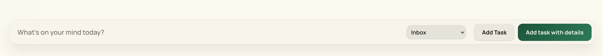
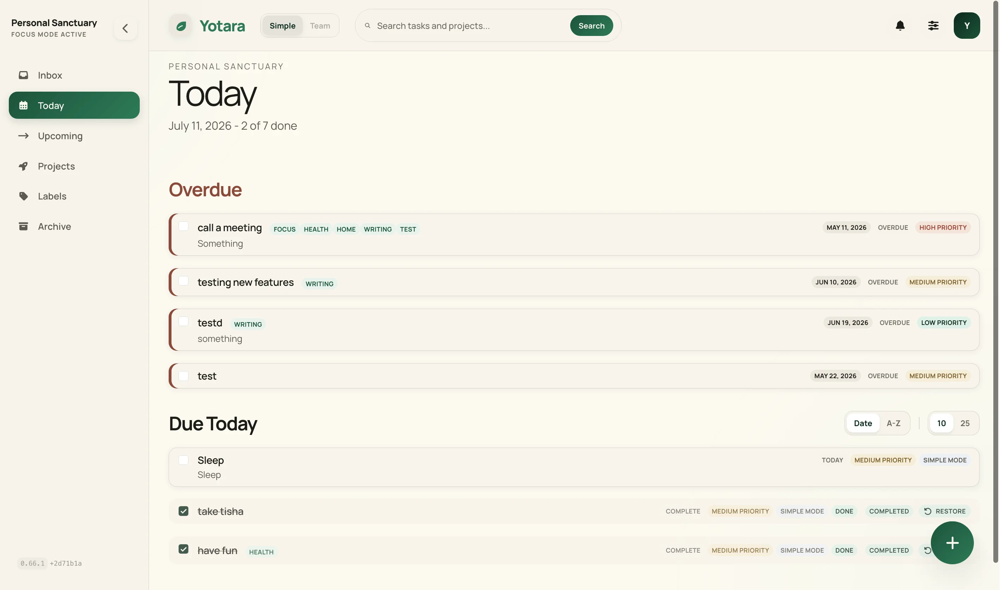
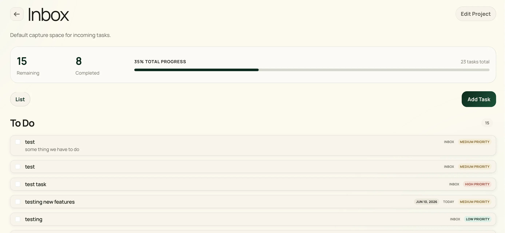
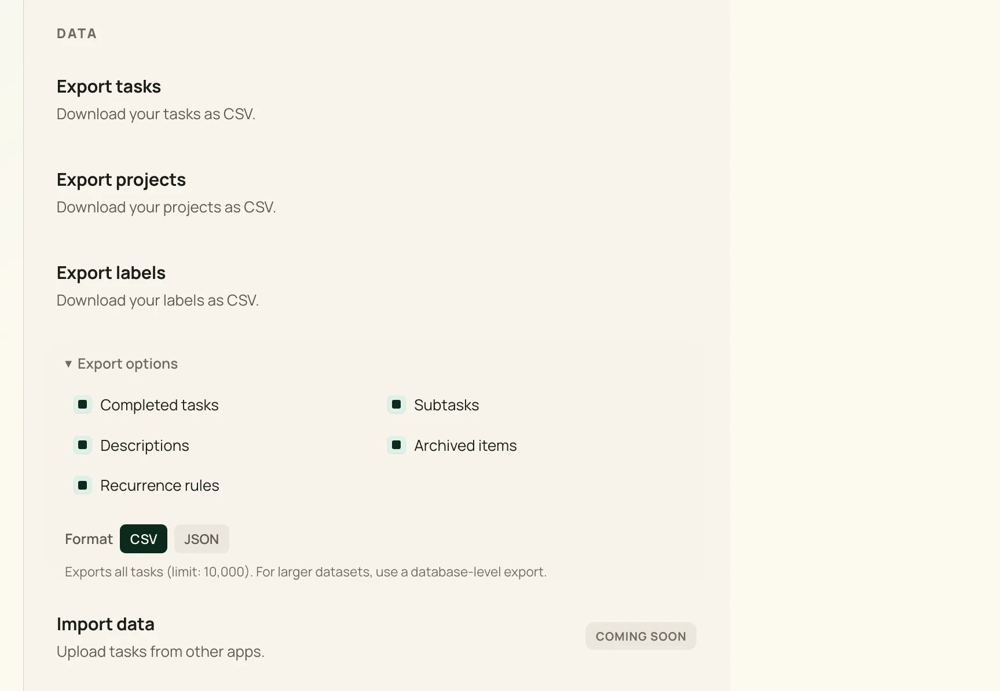

A lightweight, self-hosted
task manager that
puts your privacy first.
Capture, organize, and focus. Your data stays on your server, under your control.
Open source · Self-hosted · Docker in minutes
How it works
One quiet flow, three views
Capture the moment it lands, plan what's next, and keep everything organized — without leaving the calm.

Capture
Drop a thought into the Inbox in seconds. No folders to pick, no decisions to make — just get it out of your head.

Plan Today
Today surfaces what's due and what you flagged. One clear screen tells you where to put your attention.

Organize projects
Group related work into projects with colors and labels. Triage the inbox when you're ready, not when tasks arrive.
Why Yotara
A little setup, then complete ownership. Hosted apps win on instant onboarding; Yotara wins on what they can't offer — your tasks living on infrastructure you control, with no subscription and no one profiling your to-do list.
A little setup
Be honest with yourself: self-hosting isn't zero effort. You'll run a Docker container and set one secret to sign sessions. Budget about fifteen minutes the first time — then it just runs.
Complete ownership
Your tasks live in a single SQLite file you can back up, copy, or move anywhere. Export to JSON whenever you like. No account to lose, no service that can shut down under you.
Calm by design
No telemetry, no ads, no upsells. Open source under MIT, so you can read exactly what runs on your server — and change it if you want to.
What you get
Quick capture, projects, recurring tasks, markdown, themes, and self-hosted privacy. Everything you need, nothing you don't.
Quick Capture
Hit the capture bar, type your task, and move on. Set dates with the date picker and flag priorities with simple markers.
Projects & Labels
Group related tasks, set dates, tag with labels. Stay organized across work, personal, and everything in between.
Subtasks & Recurring
Break big tasks into steps. Set recurring schedules once and let them run — daily, weekly, or custom.
Rich Markdown
Write with markdown formatting and preview live. Built-in toolbar for bold, lists, and links — no syntax to memorize.
7 Handcrafted Themes
From Light Forest to Deep Trench. Every theme is handmade, not auto-generated. Light and dark modes included.
Buckets
Batch related work into deep-focus sessions. When a project has too many moving parts, buckets help you narrow your attention to what matters right now.
Your data, portable by design
Self-hosting is only reassuring if you can leave. Yotara is built so your tasks are yours to take, copy, or move — no lock-in, no exit fee.
- Export anytime. Pull your tasks as JSON from the API whenever you like — no request, no wait.
- One plain file. Everything lives in a single SQLite database you can copy, diff, or restore directly.
- No lock-in. Open source under MIT — if Yotara stops serving you, the code and your data still do.

Frequently asked questions
Do I have to self-host? expand_more
Yes. Yotara is self-hosted only — there is no hosted cloud version today. You run it on your own server with Docker. A managed cloud option is planned but not yet available.
Is there a mobile app? expand_more
Not yet. The web app is responsive and works on phones, but there is no native iOS or Android app. A progressive web app is on the roadmap.
How do backups work? expand_more
All your data lives in a single SQLite file. Back it up by copying the file somewhere safe — another disk, a remote server, or a cloud bucket. There is no dump or restore command needed.
Can I import tasks from other tools? expand_more
There is no import feature yet. You can export all your tasks as JSON or CSV at any time from the settings page.
How much does Yotara cost? expand_more
Yotara is free and open source under the MIT license. There is no paid tier. You pay for your own server, which can be as cheap as a $5/month VPS.
Will there be a hosted cloud version? expand_more
It is being considered but not yet committed. If it happens, you would pay for hosting, not for access to your own data.
Built in public. Self-hosted. Yours.
Yotara is open source under the MIT license. Deploy your own instance in three commands. No tracking, no telemetry, no data collection. Built for makers, students, freelancers, and anyone who'd rather host their own task manager.
$ export BETTER_AUTH_SECRET=$(openssl rand -base64 32)
$ docker compose up -d